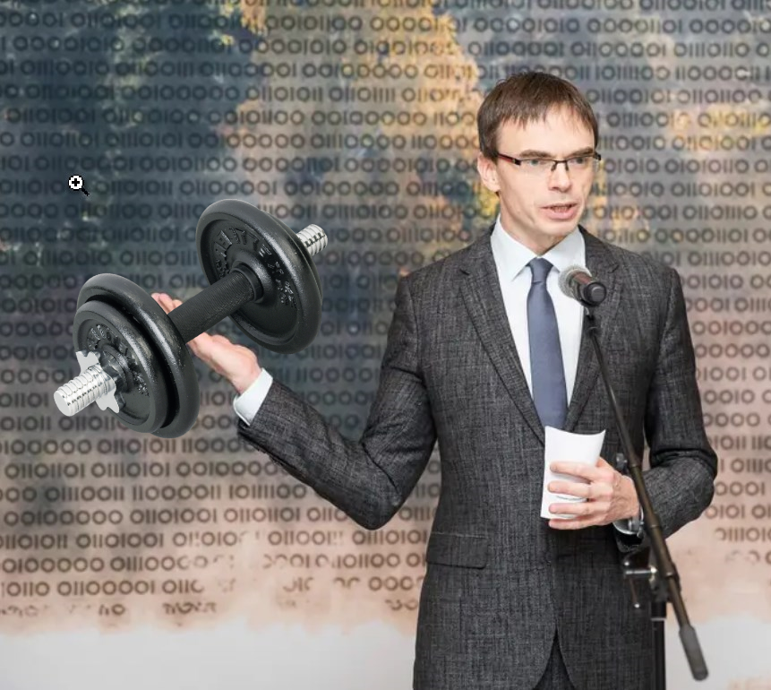

Eesti kuulsused
See leht võib sisaldada häirivat sisu ning vajada vanemlikke selgitusi!
Sven Mikser
Sven Mikser "Naerupuhang"

Sven Mikseri erinevad olekud:
- Sven nagu Sven ikka

- Sven nagu Svan

- Sven nagu Mikser

Sveni saavutused:
| Poliitikas | Eraelus | Köögis |
| Europarlamendi saadik | Tartu Ülikool (1996) | Vahustab hästi |
| endine kaitse- ja välisminister | Rohkem pole | Teda on kerge pesta |
Sven on ohtlik, sest:
- otsekohene !

- kuri
- pettunud!

- Tugev

Sven Mikser on ka öelnud:
"Ei ole tugevat inimest ilma tugeva naeratuseta!":

Sven Mikser on ka käinud:
- saates!

- sõjas

- üleval

- sünnipäeval